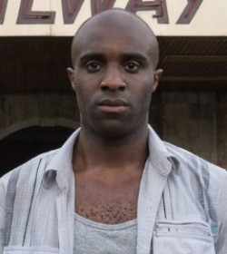
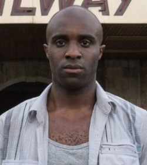

A série conta a história de oito desconhecidos: Will Gorski, Riley Blue, Capheus "Van Damme" Onyongo, Sun Bak, Lito Rodriguez, Kala Dandekar, Wolfgang Bogdanow e Nomi Marks. Cada uma dessas pessoas é de uma cultura e um país diferente (exceto Will e Nomi, ambos americanos). Em seu cotidiano, todos subitamente têm uma visão da violenta morte de uma mulher chamada Angelica e, a partir de então, eles descobrem estar mentalmente e emocionalmente ligados um ao outro, sendo capazes de se comunicar, sentir e apoderar-se do conhecimento, linguagem e habilidades alheias. A quem tem esse tipo de dom é dado o nome de Sensate. Ao passo que tentam descobrir como e por que esta conexão aconteceu e o que isso significa, um misterioso homem chamado Jonas tenta ajudar os oito. Enquanto isso, outro estranho, chamado Whispers, tenta caçá-los, usando o mesmo poder para conseguir acesso às mentes sensate, embora Whispers precise olhar nos olhos dos outros sensates.
Cada episódio reflete os pontos de vista dos personagens, que interagem uns com os outros enquanto aprofundam as próprias origens, as próprias diferenças e as experiências passadas que possam uni-los
PERSONAGENS PRINCIPAIS

 
